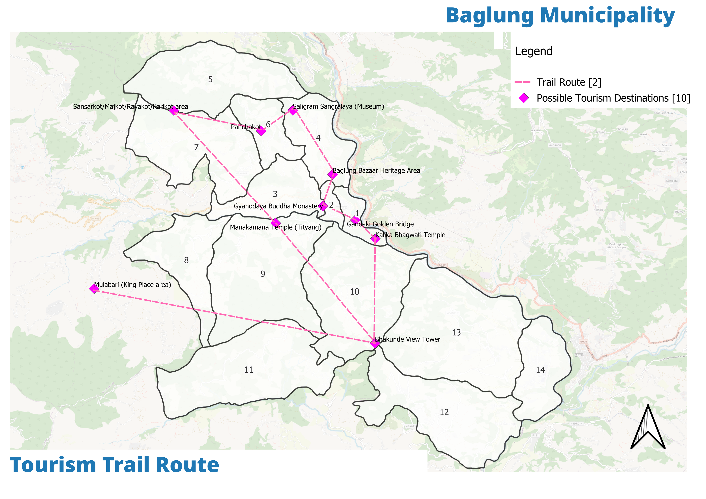
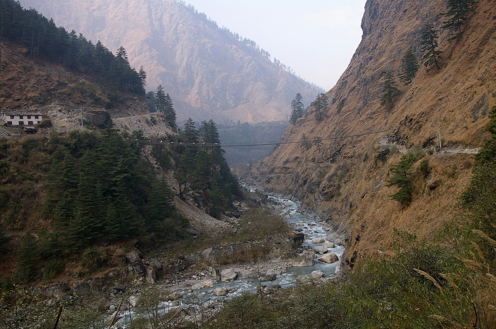
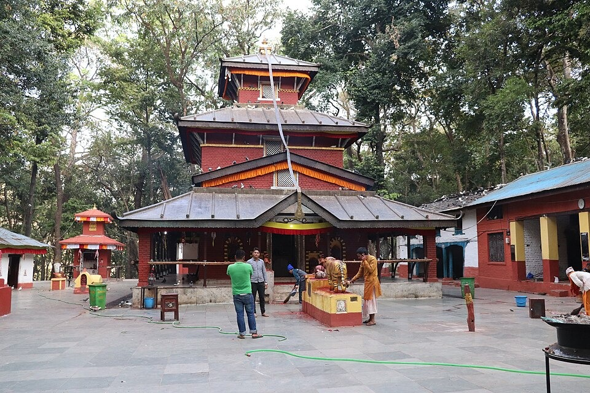

Panchakot already draws 5–7k visitors a day — but they pass through. The plan builds a Muktinath–Kalika–Shaligram–Panchakot circuit, a Ward 10 homestay cluster at Upper Bhakunde, and the anchor Shaligram Museum to turn day-trippers into overnight guests.
The assets are world-class: Panchakot's 5–7k daily visitors, Baraha Lake, the Dhaulagiri panorama, Magar culture, and 11 registered homestay sites in Ward 10 — but only four operate, and half the year the mountainside is empty.



| Problem | Evidence | Plan response |
|---|---|---|
| Single-day visit pattern | Panchakot day-trippers don't stay overnight | Circuit + homestay 1D/1N route |
| Homestays dormant | 11 registered, 4 operating | Upper Bhakunde cluster with shared court |
| Foot-only access | Titiang foot trail, 4–6 hr round | Access staging with physical corridor plan |
| Monsoon closure | Road failure empties the sector | All-weather staging, off-season programming |
Source: For addition Ch5 tourism key problems; v3 presents 8 products with selection & cost.
The preferred strategy holds three strands together: the Shaligram Museum anchor, the Kalika–Malika heritage circuit, and the Ward 10 homestay cluster — linked to the rafting corridor and cable-car flagships under Objective 2.
NPR 6.00 cr museum as the civic-religious anchor that converts the pilgrim flow into studied, saved stays.
5.50 cr public works + an illustrative 15 cr private resort — heritage-tied enterprise on the circuit.
0.8–1 km north of Baraha, trail-linked to Mulabari Tower; 252 m² built on 700–1,000 m² parcels; 4–6 units around a shared court.
Phased occupancy over a fixed overnight route — the demand-engine for the dormant 11.
| Programme | Phase I | Phase II | Phase III | Total |
|---|---|---|---|---|
| Shaligram Museum | 2.0 cr | 3.0 cr | 1.0 cr | 6.00 cr |
| Heritage circuit | 1.2 cr | 3.3 cr | 1.0 cr | 5.50 cr |
| Homestay cluster | 0.75 cr | 1.0 cr | 0.5 cr | 2.25 cr |
The PPP resort cost is indicative; occupancy-ramp risk sits with the private partner, insulated from the public purse.
v3 carries a full tourism LFA linking the three products to Objective 2 outputs and indicators.
Source: Finance T12 phasing; For addition Ch5 + homestay + IUDP DESIGNS Annex 4/P4 + Annex 5/P5.